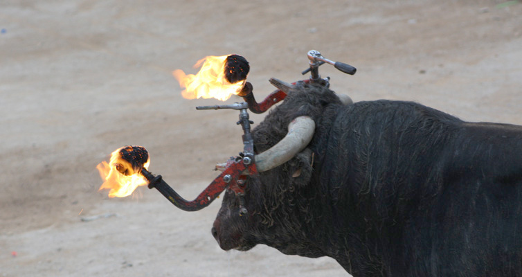

<div id="imagenPpal">
	
	<div id="textoPpal" class="fiestas">
		En Marzo, la semana anterior a San Jos&eacute;, celebramos Las Fallas. 
		<br />
		La fiesta de la primavera, el 15 de mayo, en honor a San Isidro Labrador.
		Se celebra con vaquillas y feria de maquinaria agr&iacute;cola.  
		<br />
		En Abril celebramos la Semana Santa, con distintas procesiones, y el Encuentro. 
		<br />
		En los meses de junio-julio  durante los fines de semana se celebran en cada barriada
		de nuestra localidad, distintas fiestas, con bailes y vaquillas. 
		<br />
		Las fiestas patronales o locales se celebran en la segunda quincena de agosto, con un
		car&aacute;cter cultural, sin olvidar el l&uacute;dico – taurino, en las que cabe destacar la bajada 
		del Toro del Buey del Arroz , y el Preg&oacute;n, entre otros actos.
	</div>
</div>